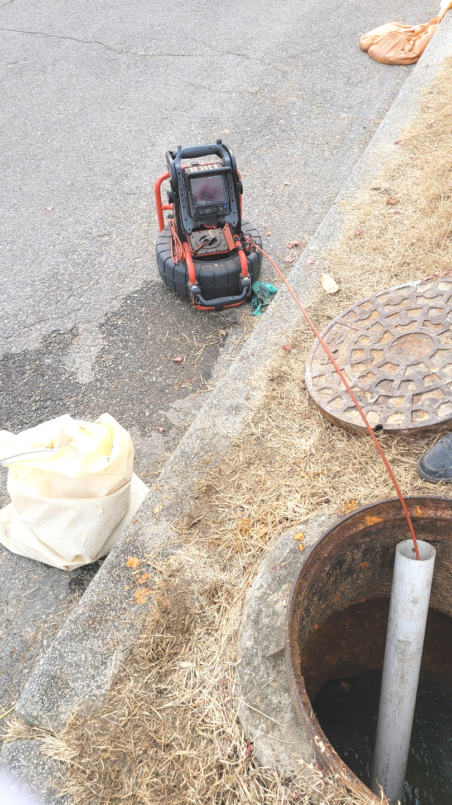
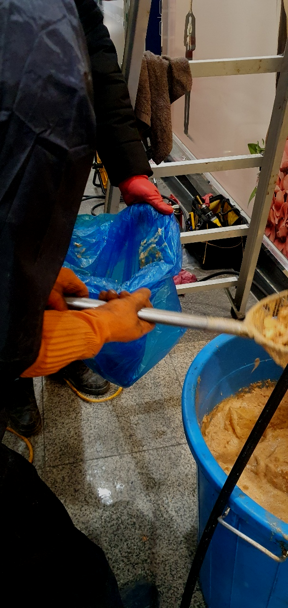
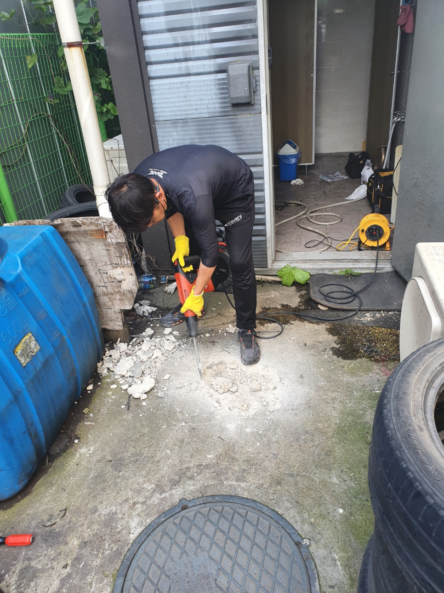
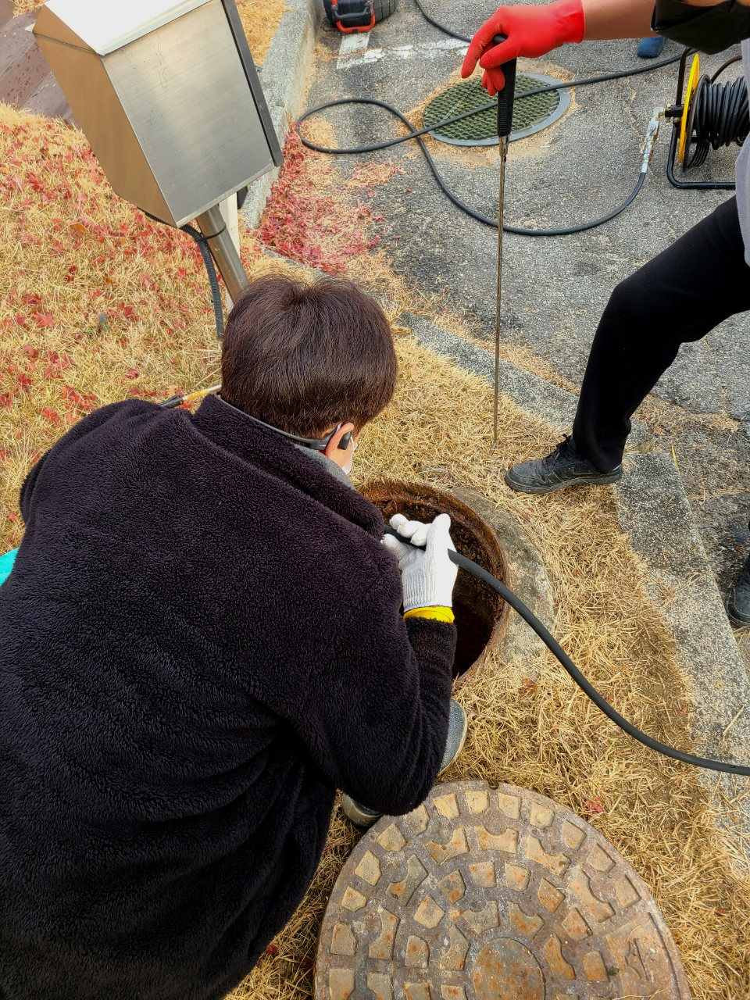
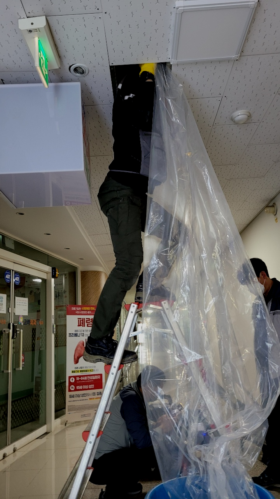
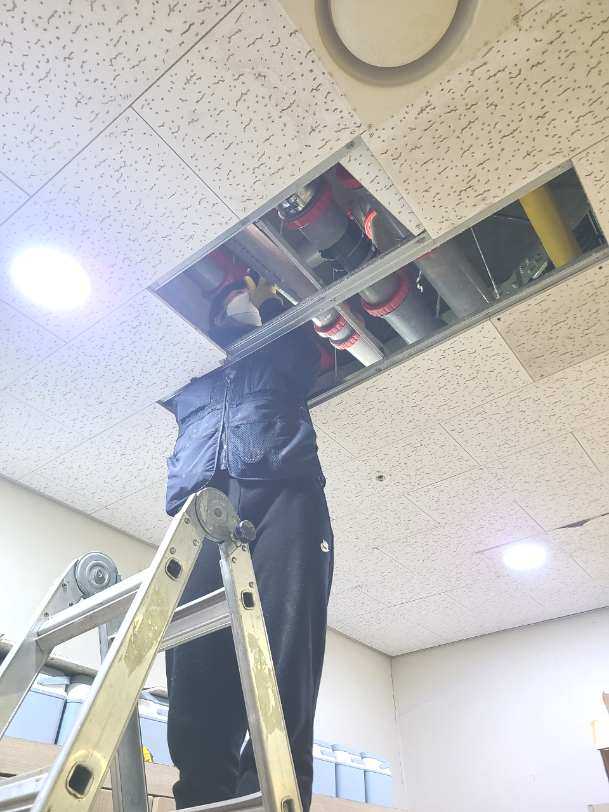

🏠 용인 수지 하수도역류 막힘 신봉동 고기동 배수구청소 설비업체
용인 신봉동 싱크대막힘 전문 시공 후기

📋 작업 개요
- 위치: 용인 신봉동, 신봉동, 용인
- 서비스 유형: 싱크대막힘, 변기막힘, 하수구막힘, 배관막힘, 역류해결, 뚫는업체, 배관청소
- 작업 일시: 2023. 10. 20. 18:19
- 업체명: 하수구수사대 (010-5615-2118)
🔍 문제 상황
어서오세요
설비전문업체 "하수구수사대"를 찾아주셔서 감사드려요^^
항상 사용하는 집안에서 배수관 막히는 문제가 발생했다면 총알처럼 방문해서 뚫어드리고 있어요. 문의량이 많아서 조금 더 만족시켜 드릴 수 있도록 성심성의껏 최선의 힘을 다하고 있는데요. 정도가 심각하여 배수관 물이 새는 현상까지 보이더라도 걱정하지 마세요
하수관막힘은 눈으로 보이지 않고 하수관막힘을 유발하는 이물질의 종류와 량의 따라서 그 상태에 있어서 조금씩 차이가 있을수 이어 배관 구조에 대한 지식이 없이는 제대로 해결을 하는 것이 어려울수 있어요.

🔎 원인 분석
💡 전문가 진단: 용인 수지 하수도역류 막힘 신봉동 고기동 배수구청소 설비업체
용인 수지 하수도역류 막힘 신봉동 고기동 배수구청소 설비업체
상태가 더욱심각해지면 물이 새는 증상이 나오게 되는데요 안고치고 방치한다면 여러배관에 같은 증상이 나타나거나 각종 냄새들이 온 집안과 공간을 괴롭히게 됩니다.
하수 구조를 확실히 이해하고 있어야만 작업 진행을 하기 전에 어떤식으로 작업을 할지 막히게 되었을지 간단하게 예상을 할 수도 있고 진행을 할때 이런 전문지식이 있어야 작업시간 단축에 큰 도움이 됩니다.
전문가여도 내시경 기계가 없다면 배관이 무엇으로 막혔는지 정확하게 원인 규명을 해드릴 수 없어요. 원인을 알아야 뚫는 방법도 정해지니 장비도 꼭꼭 확인해 주세요.배수 내시경은 필수 장비랍니다!

🔧 작업 과정
수도권 모든 지역에서 배출구경력 있는 사람들이 대기하고 있기 때문에 계신 지역이 어디든지 방문 드릴 수 있으며 아무리 심각한 상황이라도 빠르게 대처해 드리기 위해서 1시간 내에 도착을 약속합니다.
하수도 바깥쪽으로 한번 더 이물질을 걸러주는 거름망이 사라졌기에, 다른 물체가 흘러내려가 원인이 되었을 수도 있겠다 싶기도 하였습니다. 일단 어느 곳이 하수도막힌 부분인지 확인하였으니, 카메라를 꺼낸 뒤 석션기를 넣어 흡입을 시작하였습니다.
하수도막힘의 원인이 어떤 것인지를 먼저 파악하고 해결을 하는 것이 필요하다고 할 수 있습니다. 하수도내시경으로 내부를 보니 이미 많은 이물질들로 인해서 역류까지 발생을 하게 된 것이었습니다.
그치만되도록이면 다시수리를 받는일이없게끔 배수 완벽히 뚫고있어요.저희설비회사는 전국모든지역에 준비하고있어서 어떤상태든 한시간내에 의뢰자분이 살고있으신곳에 방문하고있습니다.전화주신날에도 출동이가능하기에 급하시다면 언제라도 찾아가고있습니다
문제가 감지된 구간에 내시경을 넣고 관찰해 보니 역시 저희가 예상한 대로 배수구배관의 마지막 구간 부근에서 일부 무너진 흔적이 보입니다.
어떤 기준으로 업체를 선정해야 하는지 감이 오실 텐데요. 저희를 통해서 함께 하신다면 모든 것들이 딱딱 들어맞을 겁니다. 멀쩡한 곳을 알아보기 전에 염려스러운 부분이 있다면 아무래도 수리비 문제일 것입니다.


✅ 작업 완료
그리고 전문 장비로 꼼꼼하게 진단해서 원인을 찾고, 적절한 해결 방법을 찾아 하수 문제를 해결해 드립니다. 주저 말고 필요할 땐 문의하세요.
#하수구막힘 #하수구뚫음 #하수구역류 #씽크대막힘 #싱크대역류 #오수관막힘 #하수구청소 #욕실하수구막힘 #변기막힘 #하수구뚫는비용 #싱크대수리 #화장실막힘




⚠️ 주방 싱크대 배관 막힘 예방 수칙
- ✅ 기름기가 묻은 식기나 프라이팬은 설거지 전 키친타올로 반드시 기름때를 닦아내세요.
- ✅ 주기적으로 싱크대 개수대에 뜨거운 물을 가득 받아 한 번에 내려 배관 내부 기름을 씻어내세요.
- ✅ 배수구 거름망을 미세한 필터로 사용하시고 음식물 찌꺼기가 틈으로 새어 들지 않게 관리하세요.
- ✅ 베이킹소다와 식초를 뜨거운 물과 함께 일주일에 한 번씩 부어주면 배관 살균과 막힘 예방에 좋습니다.
💡 핵심 정리
- 확실한 장비 작업(내시경 점검 및 샤프트 스케일링)으로 원인을 뿌리 뽑습니다.
- 작업 후 1년 이내에 동일한 부위 재발 시 100% 무상 A/S 서비스를 보장합니다.
- 서울 · 경기 · 인천 전 지역에 24시간 언제든 긴급 출동할 수 있도록 항시 대기 중입니다.
❓ 자주 묻는 질문 (FAQ)
🚨 용인 신봉동 싱크대막힘 문제로 고민이신가요?
정확한 원인 진단과 확실한 시공으로 재발 없는 해결을 약속드립니다.
24시간 긴급 출동 | 서울 · 경기 · 인천 전지역 | 1년 내 재발 시 무상 A/S